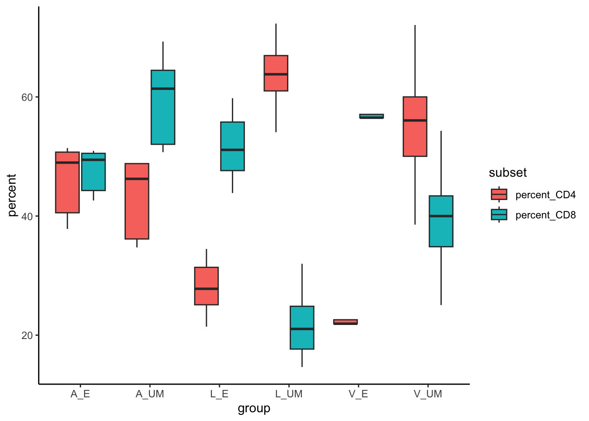
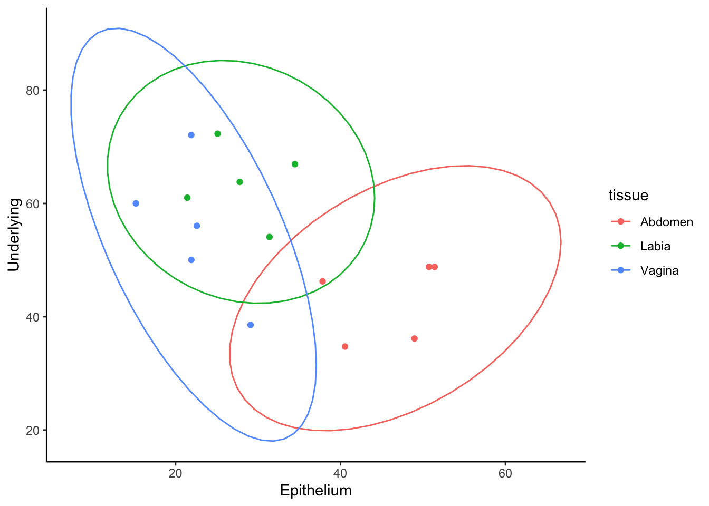

Chapter 4: Data Manipulation with tidyverse
Goals:
Introduce tidyverse for filtering, mutating, summarizing and pivoting data.
• Filtering rows (filter()), selecting columns (select()).
• Adding new columns (mutate()).
• Grouping and summarizing (group_by() + summarize()).
• Pivot longer and Pivot wider
Why use tidyverse
If you wanted to just analyse a portion of your data, you could just subset the data frame.
Code
## [1] 4729.088Code
## [1] 5462.761## [1] 3995.416However, you might have already noticed that your environment is filling up with objects and variables that we keep assigning.
With more complicated data this can get pretty annoying.
We can remove things from the environment using rm(abdo, abdo_epi, abdo_um).
We could instead write long conditionals within the square brackets.
## [1] 5462.761## [1] 3995.416However, you’ll find that this gets very long and confusing and annoying as you incorporate these into other functions, like ggplot.
This is where dplyr becomes advantageous. dplyr allows us to manipulate an object without changing it permanently, using very efficient functions and a concept called pipes.
dplyr is a package within the tidyverse ecosystem, which contains dplyr, tidyr, ggplot2, tibble, stringr, and others. So, we can install and load tidyverse for this chapter.
Filtering rows and columns
Pipes (%>%) are an important concept and effectively stand for “using this”.
From the example above, we could use dplyr instead, without assigning any new vairables, in a nice and tidy and follwable layout. When spoken, it might read like…
Code
## [1] 5462.761Now, this seems like a lot for determining one value, but we’ll see what group_by() and summarize() do shortly, which demonstrate why you might want to learn dplyr asap.
Adding a column using mutate()
Similarly, in previous chapters, we have added columns to the data for ease of use. For example:
Code
## [1] 43.09003However, there might be hundreds of extra columns I want to make. And that means making 100 unique and descriptive column names, that then just gets more and more confusing as you add to the data.
So, we can use mutate() instead, so that we don’t have to alter our original data.
Code
## [1] 43.09group_by() and summarize()
Here we’ve been writing 8 lines of code to get the mean values of one tissue type, which is useful if you wanted to do something with that exact single value. Alternatively, we can also use group_by() or summarize() to get values across multiple variables.
Code
## `summarise()` has grouped output by 'tissue'. You can override using the `.groups` argument.## # A tibble: 6 × 3
## # Groups: tissue [3]
## tissue layer mean_percent_CD4
## <chr> <chr> <dbl>
## 1 Abdomen Epithelium 43.1
## 2 Abdomen Underlying 36.5
## 3 Labia Epithelium 28.8
## 4 Labia Underlying 65.9
## 5 Vagina Epithelium 26.0
## 6 Vagina Underlying 52.5Pivot
Packages and functions, e.g. ggplot, will sometimes require that data is organised in the correct way. pivot_longer() and pivot_wider() can be effective tools for rearranging your data to suit.
Here we’ll just use a short subset of the data to easily visualise what is happening.
Code
Currently, the data is in what we might consider wide format. We have one row per tissue layer and columns for our CD3, CD4, CD8 cell counts. We’ll start by mutating extra columns to get the CD4 and Cd8 percentages and then making it long, so that we get one column called “percent” with CD4 and CD8 in a different single column called “subset”. This is a format then compatible with ggplot.
Code
## # A tibble: 60 × 9
## donor tissue layer group CD3 CD8 CD4 subset percent
## <chr> <chr> <chr> <chr> <int> <int> <int> <chr> <dbl>
## 1 Donor1 Abdomen Epithelium A_E 4460 2205 2184 percent_CD4 49.0
## 2 Donor1 Abdomen Epithelium A_E 4460 2205 2184 percent_CD8 49.4
## 3 Donor1 Abdomen Underlying A_UM 15295 7960 5529 percent_CD4 36.1
## 4 Donor1 Abdomen Underlying A_UM 15295 7960 5529 percent_CD8 52.0
## 5 Donor2 Abdomen Epithelium A_E 49774 25149 25251 percent_CD4 50.7
## 6 Donor2 Abdomen Epithelium A_E 49774 25149 25251 percent_CD8 50.5
## 7 Donor2 Abdomen Underlying A_UM 68879 47729 33616 percent_CD4 48.8
## 8 Donor2 Abdomen Underlying A_UM 68879 47729 33616 percent_CD8 69.3
## 9 Donor3 Abdomen Epithelium A_E 208665 92410 84610 percent_CD4 40.5
## 10 Donor3 Abdomen Epithelium A_E 208665 92410 84610 percent_CD8 44.3
## # ℹ 50 more rowsYou’ll notice we have duplicate entries for CD3, CD8 and CD4, but our column subset has alternating percent_CD4/CD8 and the value for that donor is in the percent column. This can now be used in a boxlpot in ggplot.
Code

Imaging having a dataframe tens of thousands long, and you were to pivot longer and then store this data. You can imagine how inefficient your analysis workflow would become in such circumstances.
Ok. Lets say that we wanted to see if there was a correlation between the percent of CD4+ T cells in epithelium versus underlying mucosa. To do this, we calculate the percent of CD4, but we need an x and y vector to give to ggplot. Currently, the data object looks like a long version of what we want. So we can pivot wider to make our graph.
Code
data2 %>%
mutate(percent_CD4 = 100*CD4/CD3) %>%
select(-c(group, CD3,CD4,CD8))%>% # using a - with select lets use remove, instead of select a given column.
group_by(tissue)%>%
pivot_wider(names_from = layer, values_from = percent_CD4) %>%
ggplot(aes(x=Epithelium, y=Underlying, color=tissue))+
geom_point()+
stat_ellipse()+
theme_classic()